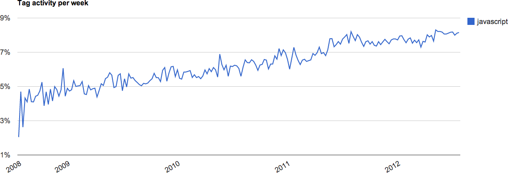
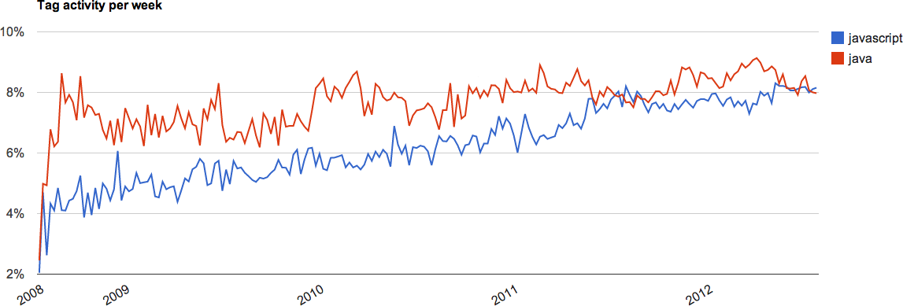
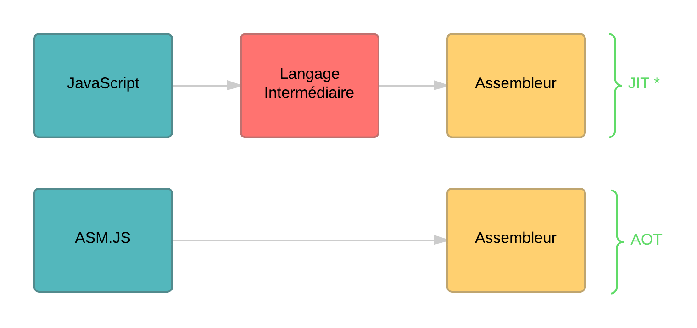

JavaScript the next big... BYTECODE
About://me
Mathieu Breton : /[mathieu] bʀətɔ̃/ (n.m.)
- Consultant Xebia, membre actif de la communauté web à Paris.
- Chevalier de l’ordre du mérite des Single Page Applications.
- Artisan web, instructeur Neo4J, docteur ès Grails et contributeur Ember.JS.
L'apogée
JavaScript sur Stackoverflow
Java/JavaScript sur Stackoverflow
JavaScript est partout
NodeJS
Bootstrap
AngularJS
Backbone
EmberJS
POURQUOI ?
Serveur Web
var express = require('express');
var app = express();
app.get('/', function (req, res) {
res.send('Hello, DevoxxFR 2014');
});
app.listen(3000);
Programmation fonctionnelle
_.chain([1,2,3,200])
.filter(function(num) { return num % 2 === 0; })
.tap(alert) // (alerted [2, 200])
.map(function(num) { return num * num })
.value(); // [4,40000]
RAPIDE
SIMPLE
PRODUCTIF
Le JavaScript c'est bien tous le temps !
Le JS SHOW
JavaScript a un Typage Dynamique Implicite Faible
Le typage JS génère un outillage de mauvaise qualité
Le typage JS rend moins pertinants les tests unitaires
Un JDK vous dites, humm ...
L'api de base est très pauvre. Votre SDK est constitué de libraitie externe :
- MomentJS
- JQuery/Zepto
- Lo-Dash/Underscore
- RequireJS/Browserify
Le langage web de demain sera
- toujours aussi productif
- moins WTF !
- typé plus fortement
- plus facile à maintenir
- doté d'outils plus puissant
BYTECODE de quoi ?
Plus de 170 langages/transpileurs génèrent du JavaScript
Les leaders
TypeScript
CoffeeScript
Dart
ASM.JS
TypeScript
Passé récement en V1.0
Sous license Apache 2 License
Super ensemble de JavaScript
CoffeeScript
It's just JavaScript
Dart
Propulsé par Google en 2011
Récement sortie en version 1.3
Sous license BSD
standardisation ECMA par le comité TC52
Dart est conçu pour :
- bâtir de larges applications web
- créer des jeux vidéos
- être plus rapide que JavaScript
Peut être executé dans une machine virtuelle
Ou sur Dartium, une version de Chromium
Transpileur Dart2Js
Nativement, Dart est plus rapide rapide que JavaScript
Et...
Le code JS généré peut être plus rapide que celui écrit à la main
ASM.js
Asm.js :
Ca vient de chez Mozilla
Sous license MIT
N'est pas pas un langage
"use asm"
Compatible tous butineurs
Accéléré depuis Firefox dans la version 22
Vraiment plus rapide ?
Bananabread : goo.gl/gFN5jp
Ok, comment c'est possible ?
Suppression des types complexes (String, Object, Boolean)
Manipulation uniquement de type numérique sur 32 bits
Utilisation massive des opérateurs bitwise
Unboxing en type primitif
Statiquement typé
Désactivation du garbage collector
Disparition des vérifications runtime
Un AOT compiler plutôt qu'un JIT compiler


Show me the code
Chart sur les perfs ...
Moteur de jeux (Unreal Engine)
Base de données (SQLite)